In this project we implemented Mirror and Glass Materials (part 1) as well as Microfacet Materials (part 2). For mirror materials we impemented a reflection function which is used to calculate the direction of reflected light. To implemented glass materials, we also needed a refract function that calculates the direction of refracted light. This needed to work for both refracting into a material and refracting out of it. The glass materials needed to handle both reflection and refraction, as well as cases where there is only total internal reflection. In part 2, we implemented microfacet materials using the correct formulas for the BRDF. To speedup rendering of microfacet materials, we implemented importance sampling of the material. This simply chooses a direction to that is more likely to contribute light to the end result. Overall, this project was simple, but required a lot of debugging.
For this part, we first implemented mirror and glass materials. For this, we implemented a reflect function that takes in a vector and returns its reflection about its normal, which is just (0, 0, 1). For the mirror surface, we use this reflect function to generate the reflected ray, and return this vector divided by the abs_cosine of this vector with the normal.
To implement the glass material, we implemented the helper function refract, which using Snell's Law, takes an input vector and assigns an output vector to the resulting refraction. The function itself returns a boolean value to determine if there is total internal reflection.
Finally, we implemented the glass BSDF's sample_f function. If there is a valid refraction, we calculate Schlick's approximation to determine the ratio of reflection energy to refraction energy and use the calculated Schlick's approximation, in a coin flip probability to reflect with probability R or refract with probability 1 - R. Otherwise, we simply return the reflectance divided by the cosine factor.
|
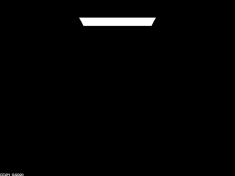
|
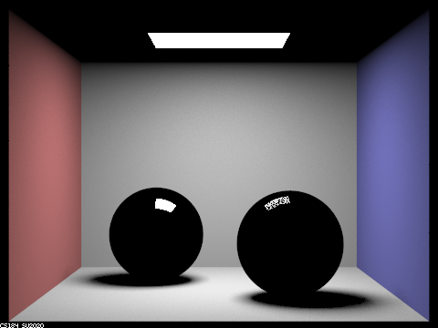
|
At a ray depth of 0 and 1, we get very dark images. At m = 0, we only see objects that emit light, so the only visible item is the light source on the ceiling. At m = 1, we can now see the direct illumination by the light, but since our spheres and lit by reflectance and refractance the do not get lit up.
|
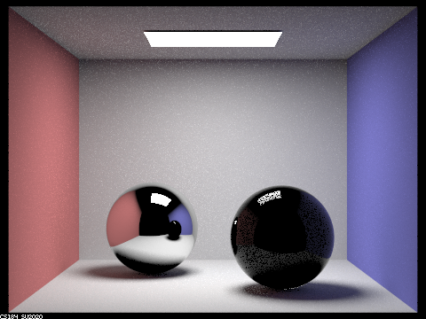
|
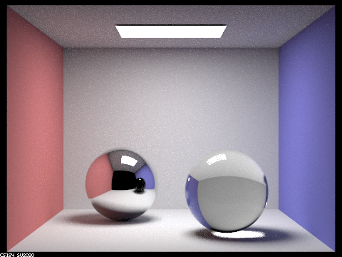
|
At a ray depth of m = 2, we can now see the mirror because it is lit up by the second bounce of rays hitting it then the light source. However, the glass sphere still appears dark since we still need another bounce for the rays going through the material. At m = 3, we can now see the glass ball. However, the mirror still shows the glass ball's reflection as dark sphere because that requires 4 bounces of light.
|
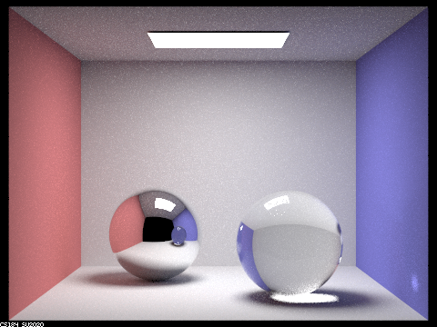
|
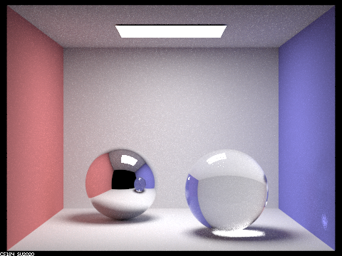
|
At a ray depth of m = 4, the mirror now shows the glass ball. We now also see that the glass ball now refracts light onto the ground below it. At m = 5, the glass ball now also refracts light on the wall to the right of it.
m = 100
Lastly, when m = 100, we render an image that is similar to the image when m = 5, since at a max ray depth of 5 we account for all relectance and refractance effects from the spheres. The only differences are that the image has slightly more color bleed, since we are accounting for more bounces of light.
Implementing Microfacet materials was fairly simple, as it was largely just writing down formulas in C code.
We had some trouble debugging the implementation.
Initially we had a lot of pitch black noise.
We implemented the check against wo and wi in sample_f that the docs suggested, but still had the noise.
We spent a lot of time debugging our implementation.
We initially added a lot of check to make sure our calculations weren't resulting in NaNs or infinite numbers.
After running a test that had MicrofacetBSDF::sample_f return the BSDF for a diffuse material, we saw that the resulting image was not purely diffuse.
This was because MicrofacetBSDF::f is also sometimes called to get the BSDF (In the case of one_bounce_radiance).
This made us realize we did not implement the checks on wo and wi in MicrofacetBSDF::f.
After adding those checks, our noise issue was resolved.
|
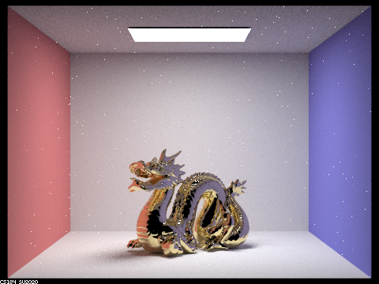
|
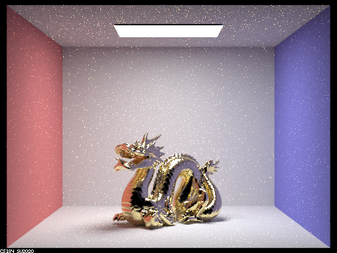
|
|
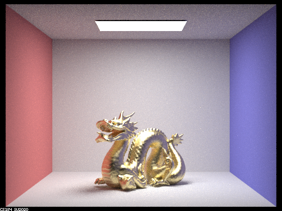
|
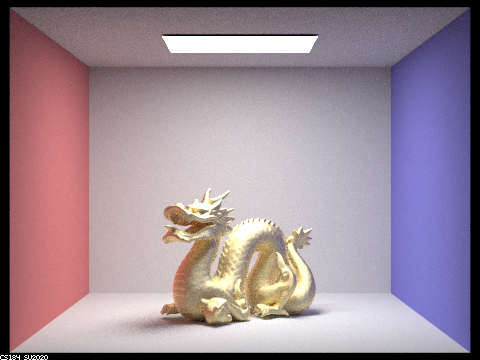
|
As expected, as the roughness (the alpha value) is increased, the material appears more matte and less reflective. On higher alpha values, the specular highlights are large, but not as sharp and have a smoother face along the edges. The low values of alpha have more noise in the form of white specks than the high values. Interestingly, instead of this noise increasing as alpha gets smaller, this noise peaks around alpha at 0.05 and is small in the 0.005 render.
|
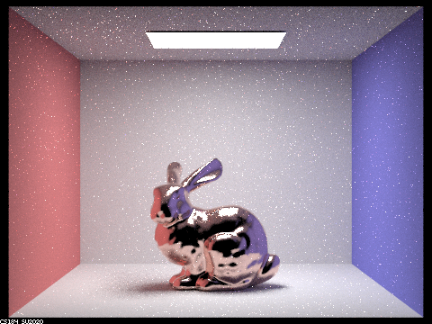
|
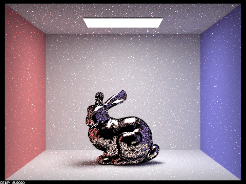
|
The main visual difference between the importance sampled BRDFs and the cosine hemisphere sampled BRDFs is the noise.
The cosine hemisphere sampling result in a lot more noise on the surface of the bunny than importance sampling.
This is simply because the cosine hemisphere sampling picks a lot of wi directions that don't contribute much light to the reflection.
Because of this, the cosine hemisphere sampling requires a lot more samples to converge.
On the contrary, the importance sampling picks wi directions that have a large contribution by design.
This results in importance sampling converge much quicker and less noise for the relatively low settings for the above renders.
|
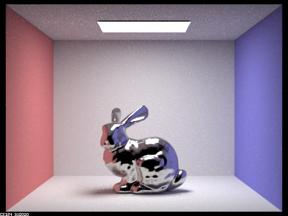
|
We chose to render cobalt using the Cornell Box bunny.
Our specific parameters were eta = (2.1849, 2.0500, 1.7925) and k = (4.0971, 3.8200, 3.3775).
Since the alpha was kept the same as the original material, the reflection looks very similar to renders of the default scene.
However, the color of the object itself and the colors of reflected light is different.
We met up together usually at a library to work on the project. We would discuss how to tackle each problem together and usually draw a diagram or read the slides to figure out the logic for the code. Then we would rotate who would type up the code for each part and debug any mistakes together. We like working together on the same part rather than splitting the work of the project because this way we both understand how each part of the code operates and we can have two people helping debug the code if we run into mistakes. This made the collaboration work really well since we both were looking at the code together. We learned about how to render different materials as well as how we can calculate the reflection and refraction of rays intersecting with transparent objects like glass and how we can use Schlick's approximation to approximate materials like glass.
https://cal-cs184-student.github.io/sp22-project-webpages-AdamRashid96/proj3-2/index.html